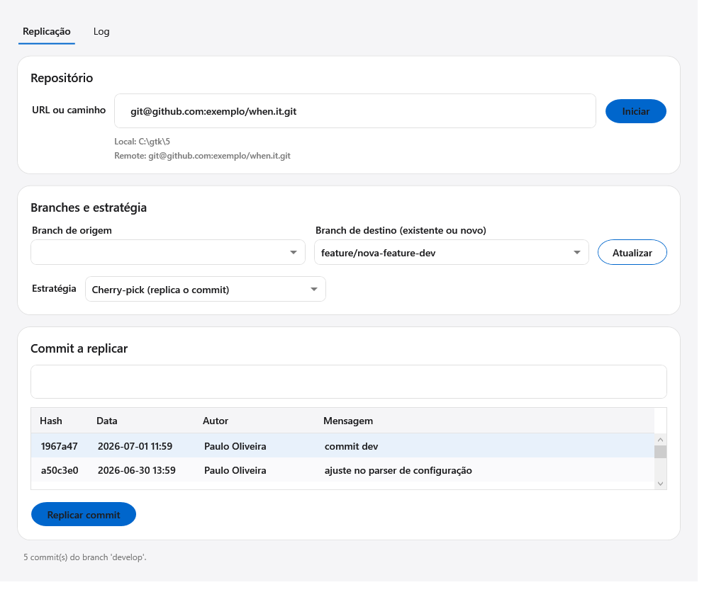
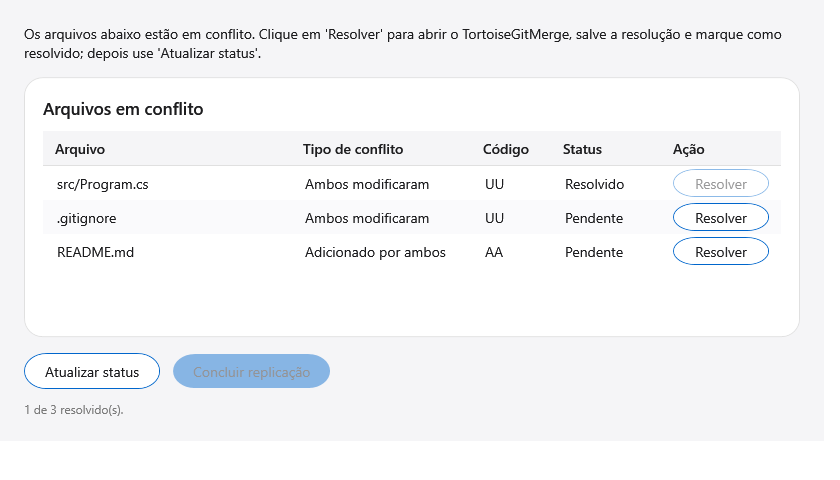

Este manual descreve como usar o git.kit para replicar um commit de um branch em outro, resolver conflitos com o TortoiseGitMerge e publicar o resultado.
O git.kit é um aplicativo desktop (Windows, WPF) que automatiza a tarefa de levar um commit específico de um branch para outro dentro de um repositório git. Ele sempre trabalha sobre uma cópia temporária do repositório, de modo que o seu projeto de trabalho não é alterado (não troca de branch nem modifica arquivos).
Principais recursos:
| Item | Necessário para |
|---|---|
git instalado e no PATH | Todas as operações (o app usa a linha de comando do git). |
| TortoiseGit (com TortoiseGitMerge) | Resolução manual de conflitos. Opcional se nunca houver conflito. |
| Acesso ao remote (credenciais/SSH) | Apenas para o passo de push. |
TortoiseGitProc.exe ou
TortoiseGitMerge.exe) na primeira vez que precisar dele.
A janela principal é dividida em blocos numerados:
| Bloco | Função |
|---|---|
| 1. Repositório | Campo "URL ou caminho" e botão Iniciar. Mostra o local da cópia (Local:) e o remote (Remote:). |
| 2. Branches e commit | Branch de origem, branch de destino (editável) e a estratégia de replicação. |
| 3. Commit a replicar | Lista de commits do branch de origem (com filtro) e os botões de ação. |
| Log de comandos git | Mostra cada comando git executado e sua saída (também gravado em arquivo de log). |
| Barra de status | Mensagem do passo atual e indicador de progresso. |
No campo URL ou caminho, informe uma das opções e clique em Iniciar:
C:\gtk\<n>) é então clonada do espelho, tornando o início bem mais
rápido nas próximas vezes.Em ambos os casos, os branches são carregados automaticamente.
%LOCALAPPDATA%\git.kit\logs (um arquivo por sessão).Use os campos de filtro acima da lista de branches de origem e acima do grid de commits para localizar rapidamente o que precisa (por nome, hash, autor ou mensagem).
Selecione Cherry-pick ou Integração de diff (ver seção 5).
Na lista, clique no commit desejado e então em Replicar commit. O resultado pode ser:
| Resultado | O que significa |
|---|---|
| Sucesso | O commit foi aplicado e commitado automaticamente. Já é possível fazer o push. |
| Nada a replicar | As mudanças já existem no destino. Nada a fazer. |
| Conflitos | Abre o formulário de resolução de conflitos (ver seção 7). |
| Falha | Erro (ex.: árvore com alterações pendentes). A mensagem detalha o motivo. |
Após o sucesso, clique em Enviar branch (push) (ver seção 8).
| Estratégia | Como funciona | Quando usar |
|---|---|---|
| Cherry-pick | Replica o commit com git cherry-pick -x, preservando autoria e mensagem. |
Caso padrão — quando você quer "o mesmo commit" no outro branch. |
| Integração de diff | Gera o diff do commit e aplica com git apply --3way, criando um novo commit. |
Quando quer apenas as diferenças aplicadas, sem vincular ao commit original. |
O campo de destino é editável. Se você digitar um nome que não existe, o git.kit cria o branch automaticamente, escolhendo a base pelo sufixo do nome:
| Nome digitado | Base usada |
|---|---|
Termina em dev (ex.: feature/x-dev) | develop |
Qualquer outro (ex.: feature/x) | master (com fallback para main) |
origin/...), o que é importante logo após o clone.Quando o git não consegue aplicar o commit automaticamente, abre-se o formulário de conflitos, com um grid contendo:

| Coluna | Significado |
|---|---|
| Arquivo | Caminho do arquivo em conflito. |
| Tipo de conflito | Ex.: "Ambos modificaram", "Adicionado por ambos", "Excluído por eles". |
| Código | Código do git (UU, AA, DU…). |
| Status | Pendente ou Resolvido. |
| Ação | Botão Resolver (abre o TortoiseGitMerge). |
cherry-pick --continue ou commit) e fecha o formulário.Após concluir a replicação, clique em Enviar branch (push). Uma confirmação mostra
o remote de destino antes do envio. O comando executado é
git push -u origin <branch>.
| Origem do repositório | Destino do push |
|---|---|
| Clone por URL | O próprio remote real (origin). |
| Aberto por caminho local | O remote real do repositório de origem (o app reaponta o origin para essa URL). |
Significa que o resultado é idêntico ao branch de destino — não há diferença para commitar. Causas comuns: o commit já estava aplicado, ou a resolução de conflito manteve o lado destino. Não é erro: o branch já reflete o estado desejado e pode ser enviado (push) normalmente.
Ocorre se a cópia tiver mudanças não commitadas antes da replicação. Em uso normal a cópia é limpa; reinicie o processo (clique em Iniciar novamente) se necessário.
Ao precisar resolver um conflito, se o TortoiseGit não for encontrado, o app abre um seletor
para você indicar o TortoiseGitProc.exe ou TortoiseGitMerge.exe. O
caminho informado é reutilizado durante a sessão.
Se algum arquivo ainda contiver marcadores de conflito (<<<<<<<),
o app não conclui e avisa quais arquivos faltam resolver.
O git.kit altera o meu repositório local?
Não. Ele sempre clona para uma pasta temporária e trabalha nela. Seu repositório original não
troca de branch nem tem arquivos modificados.
Onde fica a cópia de trabalho?
Em %TEMP%\git.kit\<nome>-<data>-<id>. O caminho aparece em "Local:" na tela.
Resolvi o conflito mas diz que o commit ficou vazio. Por quê?
Porque a resolução ficou igual ao destino. Reabra o conflito e combine o lado (origem)
se a intenção era trazer aquela mudança.
O push não envia minhas alterações ("Everything up-to-date").
Garanta que concluiu a replicação (botão Concluir replicação) antes do push, e que o
commit foi de fato criado (veja o Log de comandos).
Posso replicar para um branch que ainda não existe?
Sim. Digite o nome no campo de destino; ele é criado a partir de develop (sufixo
dev) ou master.
| Termo | Significado |
|---|---|
| Cherry-pick | Aplicar em um branch um commit específico de outro. |
| Branch de origem | Branch que contém o commit a ser replicado. |
| Branch de destino | Branch que receberá o commit. |
| Conflito | Quando o git não consegue mesclar automaticamente as alterações. |
| Stage / git add | Marcar um arquivo como resolvido/pronto para commit. |
| Push | Enviar commits/branches locais para o repositório remoto. |
| Remote (origin) | Repositório remoto associado ao projeto. |